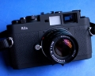

santorini4212012-10-13 10:174.67 分
操作性 4.50功能性 4.50美观性 4.50趣味性 5.00耐用性 4.50性价比 5.00
SumerBlue2011-03-09 10:574.42 分
操作性 4.50功能性 4.50美观性 4.50趣味性 4.00耐用性 4.00性价比 5.00
someday20462009-02-06 14:434.5 分
操作性 5.00功能性 5.00美观性 4.50趣味性 4.50耐用性 3.00性价比 5.00
小胖哥2008-07-05 16:104.25 分
操作性 4.50功能性 4.50美观性 4.00趣味性 4.00耐用性 3.50性价比 5.00

digihome2008-04-04 22:584.25 分
操作性 4.50功能性 4.50美观性 4.00趣味性 4.00耐用性 4.00性价比 4.50
fatloud2006-07-08 22:113.83 分
操作性 3.50功能性 4.00美观性 3.00趣味性 4.50耐用性 4.00性价比 4.00
corakun2006-05-11 22:374.08 分
操作性 4.00功能性 4.00美观性 4.50趣味性 4.50耐用性 3.50性价比 4.00
爱好太多2005-12-15 14:234.42 分
操作性 5.00功能性 5.00美观性 4.50趣味性 4.50耐用性 2.50性价比 5.00